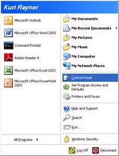
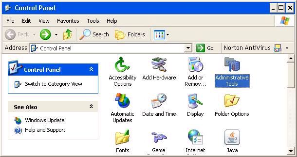
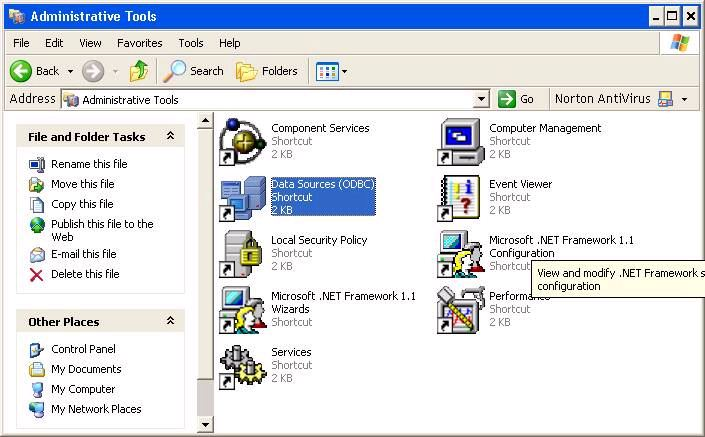
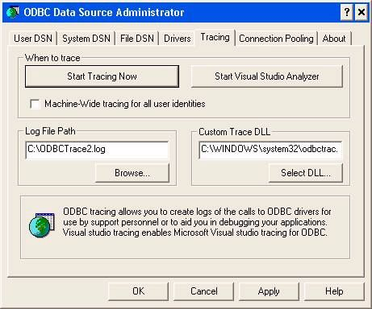

How to Create an ODBC trace file
The ODBC trace is available from the ODBC configuration dialog.1. Go to the Windows Control Panel:

2. Select Administrative Tools:

3. On the Administrative Tools page select Data Sources (ODBC)

4. Select the tab labeled Tracing:

5. Specify a Log File Path and click �Start Tracing Now�.
6. Run Alpha Anywhere and perform the test or execute the script you want to trace. It helps if you keep the test as simple as possible to minimize the size of the trace file.
7. Repeat steps 1 to 4 to go back to the ODBC Data Source Administrator dialog and click the same button (now labeled �Stop Tracing Now�).